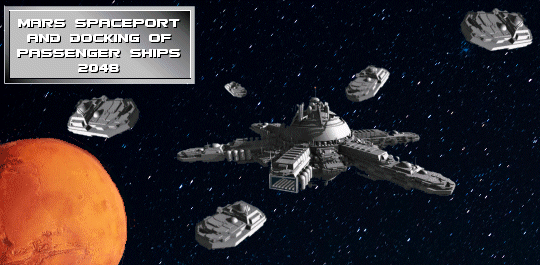
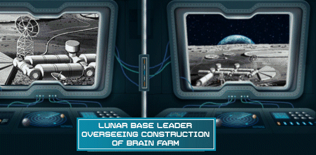
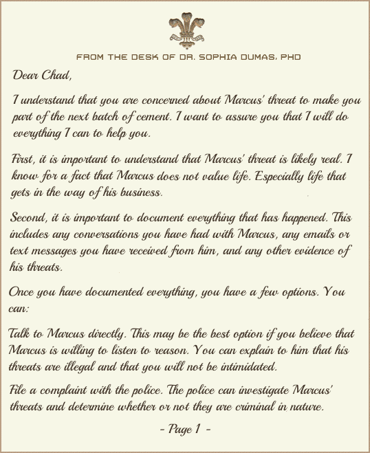
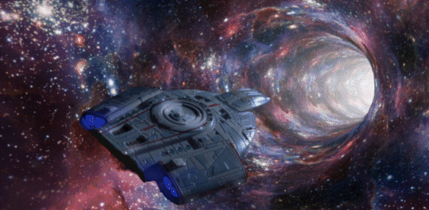

Chapter 03 Description
Marcus steals Dr Dumas' work and moves forward to develop a Brain Farm. This is the first time you really get a glimpse of Marcus Mephitis' dark side. We also see the creation of the 44th Triad which is composed of Dr. Dumas and military buddies who served together in the 2044 War. There's an expansion of the moon and Mars facilities. Chad, a worker on the moon, messes up and flees from Hy-Space only to get lost in a wormhole.

With Dr. Dumas' Moon, Earth, Mars Exoskeleton Network, or MEMEXON in place he had a special unit of his most loyal engineers and scientists to learn everything they could about the technology. Marcus has been monitoring Dr. Dumas' work with badly wounded soldiers. He was particularly interested in the work Dr. Dumas was doing on keeping the soldier's brain alive and healthy while his body was being evaluated. Her work was so successful that some people said that Dr. Dumas could keep the brain alive without the body. Here is what Dr. Dumas told Marcus about keeping a brain alive without the body. Dr. Dumas stood before Marcus, her voice calm and measured, as she explained the intricacies of her groundbreaking work in preserving the brains of severely wounded soldiers. Marcus listened intently, his eyes gleaming with a mix of fascination and morbid curiosity. "The human brain is an incredibly resilient organ," Dr. Dumas began, her words echoing through the dimly lit room. "Even in cases where the body has sustained irreparable damage, the brain can still maintain its vital functions, retaining its consciousness and cognitive abilities." Marcus nodded slowly, his mind racing with the implications of Dr. Dumas' words. If the brain could be kept alive independently of the body, it meant that the very essence of a person, their memories, thoughts, and emotions, could be preserved indefinitely. "My work has focused on developing a sophisticated perfusion system that can deliver oxygen and nutrients directly to the brain," Dr. Dumas continued. "This system mimics the flow of blood, maintaining the brain's delicate balance of chemicals and preventing it from deteriorating." Marcus' eyes widened in astonishment. The idea of keeping a brain alive without a body was a concept that had long been relegated to the realm of science fiction, but Dr. Dumas' work suggested that it might soon become a reality. "In some cases, we have been able to keep brains alive for extended periods," Dr. Dumas admitted, her voice tinged with a hint of awe. "The technology is still in its early stages, but the potential is immense." Marcus' mind whirled with possibilities. If he could control this technology, he could potentially create an army of disembodied brains, loyal to his commands and capable of carrying out his every order. He could amass a vast repository of knowledge, extracting the wisdom and expertise of countless individuals for his own gain. "The ethical implications of this technology are profound," Dr. Dumas cautioned, her eyes meeting Marcus' gaze with a hint of concern. "We must proceed with great care, ensuring that this power is not used for malevolent purposes." Marcus dismissed her concerns with a wave of his hand. "Power is meant to be wielded," he declared, his voice laced with arrogance. "Those who fear its potential are destined to remain powerless." Dr. Dumas' heart sank. She had hoped that Marcus would recognize the immense responsibility that came with this technology, but his words betrayed his insatiable thirst for power. The future of humanity, it seemed, rested on a precarious balance, with the potential for both extraordinary progress and unimaginable destruction. Marcus makes plans for a brain farm on the Moon. Marcus has a team of scientists secretly exploiting Dr. Dumas' ZON. They plan to have a twenty-four seven operation to drive construction exoskeletons remotely by connecting them to ZON. Under the cloak of secrecy, Marcus, driven by his insatiable ambition for power, hatched a sinister plan to establish a brain farm on the Moon, a twisted scheme that would exploit the revolutionary ZON technology developed by Dr. Dumas. His team of scientists, working in the shadows, meticulously devised a plan to harness ZON's immense power for their nefarious purposes. The heart of Marcus' audacious plan was the remote operation of construction exoskeletons using ZON's neural network capabilities. With this technology, they could control these robotic marvels from the comfort of their hidden lunar base, eliminating the need for a physical presence on the Moon's harsh surface. Marcus envisioned a round-the-clock operation, with teams of scientists working in shifts to oversee the exoskeletons' relentless construction efforts. The Moon would become a hive of activity. Marcus took advantage of the ancient lava tubes that had been discovered on the moon. The lava tubes were first discovered in 2008 by Chandrayaan-1

2046, 44th Triad formed As Dr. Dumas, Captain Russell, Scotty Armstrong, Betty Ballena, and Sally Cross sat around the table, a sense of urgency hung in the air. They had gathered to discuss a pressing matter: how to bring down Marcus Mephitis, the notorious criminal mastermind, who had escaped justice time and again. "Marcus is a menace," Dr. Dumas declared, her voice laced with determination. "He's responsible for countless crimes, and his actions have caused untold suffering. We can't allow him to continue wreaking havoc." Captain Russell nodded in agreement. "I've been tracking Marcus for years, and he always seems to slip through our fingers. He's a cunning and resourceful adversary." Scotty Armstrong, the engineer with a knack for problem-solving, chimed in. "We need a plan, a way to catch Marcus off guard and finally bring him to justice." Scotty then explained that before anything could be done, they needed a secure means of communication. Scotty went on to muse about a device of some sort, that would be secure, small enough to be easily carried and be able to be hidden in plain sight. All five at the table brainstormed for a while. They needed a secure, communication device. What they came up with was a coin, that was a communication device, and was secure. On the front side of the coin was a triangle with 44th printed in the triangle. It was also stamped with .999 Pure Titanium. On the back side was a blue round crystal. It was also stamped with Titanium and 2046. It also had five stars on it. Each star represented the five original members. The stars also contained a drop of each founder's blood for DNA verification. The blue round crystal contained a communication device. It looked like Blue Lace Agate but was a polymer crystal that could store energy, produce a hologram, handle security and execute as a communication device. Each coin was able to communicate through the ZON. Also for security, each coin could validate the receiving coin's DNA by checking the DNA against the five samples that existed on each coin. Twenty other coins were distributed. These looked like the original five but did not contain their sophistication. They had encrypted chips that contained unique twenty digit security codes. These twenty additional members were used to verify the identity of individuals who were sympathetic to the 44th Triad cause, but were unknown to individuals that needed to pass on trusted information. Betty Ballena, the sharp-witted investigator, leaned forward, her eyes gleaming with determination. "I've been digging into Marcus' operations, and I've found some interesting connections. He's got his hands in a lot of pies, but there's one particular deal that could be his undoing." Sally Cross, the resourceful and unwavering leader, listened intently as the others shared their thoughts and ideas. She knew that taking down Marcus would be a daunting task, but she was confident that with their combined expertise and determination, they could succeed. "We need to work together," Sally emphasized, her voice carrying a sense of conviction. "We need to pool our resources, share information, and coordinate our efforts. This is bigger than any one of us; it's about justice and protecting the innocent." The group spent hours discussing strategies, analyzing Marcus' weaknesses, and devising a plan to expose his crimes and bring him to justice. They knew that Marcus was no easy target, but they were determined to outsmart him and bring him to account for his actions. As the meeting drew to a close, a renewed sense of hope filled the room. Dr. Dumas, Captain Russell, Scotty Armstrong, Betty Ballena, and Sally Cross knew that the task ahead was formidable, but they were united in their resolve to bring Marcus Mephitis to justice. Together, they formed the 44th Triad, a formidable alliance dedicated to protecting the innocent and upholding the law. The 44th Triad is composed of trusted members of the scientific community, the fourth estate, and military veterans. This group earned each other's trust during their time spent interacting with each other, during the war of 2044. With their combined strength and unwavering determination, they were prepared to face any challenge that lay ahead. The 44th Triad, a group of brilliant minds united in their mission to protect the innocent and uphold the law, gathered for a crucial brainstorming session. The formidable Marcus and his organization, Hy-Space, had emerged as a significant threat, their nefarious activities casting a shadow over the world. Dr. Dumas, the group's intellectual anchor, initiated the discussion, her voice resonating with determination. "We need to devise a strategy, a multifaceted approach that will effectively counter Marcus' operations and bring him to justice." Captain Russell, the seasoned tactician, chimed in, his eyes reflecting strategic prowess. "We must disrupt Hy-Space's financial networks, severing their flow of illicit funds and hindering their ability to operate." Scotty Armstrong, offered his perspective, his mind teeming with innovative solutions. "We could sabotage their infrastructure, disrupting their communication channels and hindering their ability to coordinate their activities." Betty Ballena, the resourceful investigator, proposed a more covert approach. "We could infiltrate Hy-Space, gathering evidence of their crimes and exposing their illicit dealings to the world." Sally Cross, the unwavering leader, synthesized the diverse suggestions, her voice filled with conviction. "We need a combination of these tactics, a coordinated effort that will cripple Hy-Space's organization and bring Marcus to account." The 44th Triad delved into the details, their minds working in unison, crafting a comprehensive plan to dismantle Hy-Space's empire. They would attack from multiple fronts, utilizing their unique skills and expertise to disrupt Marcus' operations and expose his crimes. Captain Russell proposed a daring cyber attack, targeting Hy-Space's financial networks and severing their access to illicit funds. This would cripple their ability to operate, forcing them to retreat into the shadows. Scotty envisioned a series of strategic sabotage missions, disrupting Hy-Space's infrastructure and hindering their communication channels. This would sow chaos within their organization, making them vulnerable to further attacks. Betty devised a plan to infiltrate Hy-Space, gathering evidence of their crimes and exposing their illicit dealings to the world. This would shatter their reputation and undermine their public support, turning the tide against them. Sally proposed a coordinated media campaign, utilizing their evidence to expose Marcus' true nature to the world. This would erode his public image and galvanize support for their cause. As the brainstorming session drew to a close, a sense of unity and determination permeated the room. The 44th Triad had forged a comprehensive plan, a multifaceted assault on Marcus and Hy-Space, designed to bring them to justice and protect the innocent. With their combined strength and unwavering resolve, they were prepared to face any challenge that lay ahead.
2048 Earth Captain Russell, Scotty Armstrong and Sally Cross meet in a bar in Houston right outside the Kennedy space center. Scotty always sat in the same booth when he came to this bar, not because it was particularly comfortable, but because he would be facing his favorite graphic of Mars. The graphic in the bar in Houston is attributed to the artist only known as G-Factor. Like Banksy, he wants to remain anonymous even though his graphics of space sold for hundreds of thousands of Hydros.After having some drinks, which Sally never has to pay for, and telling stories about the 2044 war, they make plans about how they can work together as the Mars colonization starts to really take off. They agree that they should stay in touch and maybe work together if they happen to cross paths. It is a short but enjoyable meeting and they agree to meet periodically as their careers start to unfold. Sally Cross is interviewing for a job at Hy-Space to manage Refueling Station 3. She is a highly qualified candidate with years of experience in the aerospace industry and is a decorated combat veteran. She is also a natural leader and has a proven track record of success. The interview went well. Sally is able to demonstrate her knowledge and skills to the interviewer. She is also able to articulate her vision for the future of Refueling Station 3. At the end of the interview, the interviewer thanks Sally for her time and tells her that they will be in touch. Sally is confident that she did well in the interview and that she has a good chance of getting the job. A couple of weeks later. Captain Russell, Scotty Armstrong, and Sally Cross meet at the end of the year to talk business. Sally tells the other two that she got the job managing Refueling Station 3 for Hy-Space. Captain Russell and Scotty Armstrong are thrilled for Sally. They know that she is the perfect person for the job. She is intelligent, experienced, and driven. They are confident that she will be successful in her new role. Sally tells Captain Russell and Scotty about her plans for Refueling Station 3. She wants to make it the most efficient and reliable refueling station in the solar system. Captain Russell and Scotty offer their support to Sally. They know that she has a lot of work ahead of her, but they are confident that she will be successful. Captain Russell then speaks up. Sally isn't the only person with news, Captain Russell then tells the other two that he has been hired by Hy-Space to command a tanker ship. Scotty then announces that he is going to be a privateer delivering goods and people to Mars. Dr. Dumas was contemplating the most critical operation that 44th Triad could carry out to get the most bang for the buck. Over and over she went back to the communications of Marcus' and Hy-Space enterprise. Dr. Dumas thought that corporate and personal communications between Marcus and his executives were in effect the keys to the kingdom. Just mulling it over to herself, she thought that she and her allies had the technical capabilities to intercept communications, but because of Hy-Space extensive system security, she wasn't sure how her group could break in without being detected. Until she got a calendar reminder which said, "30 days until the Earth/Mars Solar conjunction. Plan for a two week break in coms between Earth and Mars." Then it was as if a lightbulb went on over her head. Of course we will get our best chance to break into the Hy-Space coms system during the conjunction. With this thought she immediately set up a planning session with the 44th Triad.
The air crackled with tension as Scotty, Sally, and Dr. Dumas gathered for an emergency meeting of the 44th Triad. Dr. Dumas' face was etched with concern as she announced the looming solar conjunction, a rare celestial event that would disrupt all communication between Earth and Mars for the next 30 days. "This is a critical situation," Dr. Dumas emphasized, her voice laced with urgency. "Without communication, our operations on Mars will be severely hampered. We need to find a solution, and we need to find it fast." Sally's mind raced, analyzing the implications of this unprecedented disruption. "We can't afford to lose contact with our Martian teams," she declared, her voice firm and determined. "We need to find a way to relay communications, even during solar conjunction." Captain Russell, the seasoned spacefarer, stepped forward, his eyes gleaming with a hint of challenge. "I believe I have a solution," he announced, his voice filled with confidence. "We can reposition Refueling Station 3, our orbital outpost, to a point where it can act as a relay station, circumventing the solar interference." A murmur of excitement rippled through the room as Captain Russell laid out his plan. He explained that by carefully maneuvering Refueling Station 3 to a specific location in space, they could create a communication link between Earth and Mars, effectively bypassing the solar disruption. Sally's eyes lit up with approval. "This is brilliant, Captain," she exclaimed. "It's a risky maneuver, but it's our best chance of maintaining contact with our Martian teams." Dr. Dumas nodded in agreement. "This is a daring plan, but it's our only option. We need to proceed with caution and precision, but we must also act swiftly. Solar conjunction is approaching, and we don't have much time." The 44th Triad sprang into action, each member taking on a specific role in the intricate operation. Sally and Scotty coordinated the logistics of the maneuver, while Captain Russell oversaw the technical aspects of the relocation. Dr. Dumas provided her expertise on the celestial mechanics involved, ensuring that Refueling Station 3 would be positioned correctly to act as a relay station. The tension was palpable as the team worked tirelessly, their minds focused on the impending deadline. The solar conjunction was drawing closer, and the success of their mission rested on their shoulders. With unwavering determination, the team executed Captain Russell's plan flawlessly. Refueling Station 3 was carefully guided to its new position, its trajectory precisely calculated to avoid any celestial obstacles. As the solar conjunction approached, Refueling Station 3 was poised to serve as a lifeline, connecting Earth and Mars despite the disruption caused by the sun. When the solar conjunction finally occurred, the world held its breath. All communication between Earth and Mars ceased, the sun's massive presence blocking all signals. But amidst the silence, a glimmer of hope emerged. Refueling Station 3, true to its new role, relayed communications between the two planets, a beacon of resilience in the face of cosmic interference. The 44th Triad's plan to infiltrate Hy-Space's secure network and spy on Marcus' communications was a daring and intricate operation, carefully timed to coincide with the solar conjunction, a rare celestial event that would temporarily disrupt communications between Earth and Mars. The plan hinged on the successful repositioning of Refueling Station 3, a crucial orbital outpost that would act as a relay station during the solar conjunction. This would allow the 44th Triad to maintain a communication link with their Martian team, ensuring that their covert operation could proceed without interruption. With Refueling Station 3 in place, the 44th Triad began the delicate task of installing their listening software into Hy-Space's secure network. This involved exploiting a brief glitch in security that would occur as a result of the solar conjunction. The glitch would provide a window of opportunity for the software to be implanted undetected. The timing of the operation was critical. The 44th Triad had to wait until the exact moment of full solar conjunction to initiate their plan, ensuring that Hy-Space's security systems were at their most vulnerable. Once the software was installed, it would remain dormant, waiting for the solar conjunction to end and communications to resume. As the solar conjunction approached, the 44th Triad held their breath, their hearts pounding with anticipation. They had meticulously planned every aspect of the operation, but there was still an element of risk involved. Any misstep could expose their plan and alert Hy-Space to their presence. The moment of truth arrived, and the solar conjunction reached its peak. The 44th Triad activated their listening software, their eyes glued to the computer screens. A surge of excitement coursed through them as the software successfully connected to Hy-Space's network, granting them access to their secure communications. The connection was secure and dormant. Finally when the solar conjunction ended, the monitoring went live. With bated breath, the 44th Triad began monitoring Hy-Space's communications, gathering valuable intelligence on their operations and plans. They meticulously documented every conversation, every email, and every message, building a comprehensive picture of Marcus' clandestine activities. The 44th Triad's audacious plan had succeeded. They had infiltrated Hy-Space's secure network, gaining access to a wealth of sensitive information that would prove invaluable in their mission to bring Marcus and Hy-Space to justice. The solar conjunction, once a potential obstacle, had become an unexpected ally, providing a cover for their covert operation and allowing them to strike with impunity. As the solar conjunction waned and communications between Earth and Mars resumed, the 44th Triad quietly withdrew, their listening software remaining dormant within Hy-Space's network. They had planted a seed of espionage, a hidden eye that would continue to feed them with crucial intelligence, enabling them to stay one step ahead of Marcus and Hy-Space's nefarious schemes. The battle against Marcus and Hy-Space had taken a new and decisive turn, and the 44th Triad held the upper hand, armed with the power of information.
Then one day in 2047 My great-granddaughter, Betty, sent me a note saying that she got an assignment for GNN to cover a scientific space think tank on a private island in Hawaii owned by Marcus Mephitis. The symposium was going to take place in about six months, so there was no hurry. She wanted to know if I still had that paper that I had written on Superlytic Flight back in the 1970s. I told her, of course I do. I would not only be glad to send it to her but I also had a paper from my friend Gene on using wormholes in space to shorten communication times. Betty thanked me and said she was just looking for ideas for the think tank just so she had something in case someone asked her a question. As it turned out, as Betty was interviewing Dr. Sophia Dumas, Dr. Dumas asked Betty if she had any questions or comments for her. Betty started by saying what an honor it was to be able to interview her. Then Betty said, "You were talking about one piece of your work that concerned you, which is the time it takes to interact with craft on other planets. This is really crazy and I am almost too embarrassed to bring it up, but my great-grandfather's friend Gene addressed that in a paper back in 2023." Dr. Dumas was very gracious and told Betty not to be embarrassed, you never know where an idea will come from that may be the missing piece to a puzzle. So Betty presented both papers to Dr. Dumas. She quickly scanned them then looked up at Betty and said, "Wormholes, very interesting." With that, the interview was over.Symposium in 2048 Marcus held a symposium on the Kahoolawe compound to set up the next steps for his Mars initiative. Under the canopy of a giant mango tree, on the tiny Hawaiian island, a group of experts gathered to discuss Marcus Mephitis' ambitious plans for a Mars initiative. Marcus, an industrial billionaire and the founder of the space company Hy-Space, had sponsored the symposium in hopes of gaining support from the scientific community for his bold vision. The panel of experts included some of the leading minds in space exploration, from astrobiologists to rocket engineers. They were all eager to hear more about Marcus' plans, but they were also skeptical. After all, sending humans to Mars was no easy task. It would require a massive investment of time, money, and resources. And even then, there was no guarantee of success. Marcus began his presentation by acknowledging the challenges ahead. But he also emphasized the importance of exploring Mars. He argued that it was not only a scientific imperative, but also a moral one. Humans had a responsibility to expand their reach and learn more about the universe, he said. Marcus then went on to outline his plans for the Mars initiative. He said that Hy-Space was developing a new type of spacecraft that would be capable of transporting humans to Mars and back. He also said that the company was developing new technologies for living and working on Mars, such as self-sustaining habitats and food production systems. All had different reasons for being there, but included in the guest list for the Mars Initiative Symposium were a group of individuals who knew each other from either, the War of 2044, or other business dealings. Leading the group was Dr. Dumas who worked for Marcus. Dr. Dumas also invented the technology that would make the Mars plan possible. Cody Jacobs was invited as a guest of Dr. Dumas. Besides being a long time friend of Dr. Dumas, Cody had worked with or served alongside Captain Russell, Sally Cross, Scotty Armstrong and Norman Narval during the War of 2044. Dr. Dumas thought that he would be an excellent liaison to that group. Betty Ballena was there as a scientific reporter for GNN. Marcus had requested that GNN record the symposium and broadcast a special about it. GNN management agreed to do just that and sent a team led by Betty to cover the symposium. Grace Roseberg, Ph.D. crashed the party. She had heard about the symposium from various sources and she decided that she needed to be there. Dr. Dumas convinced Marcus that Grace Roseberg could be a valuable asset. She had connections world wide to environmentalists. Dr. Dumas' thought that Grace could be good publicity for the project if Marcus could convince her of his Mars plan. Captain Russell, Sally Cross and Norman Narvall were all there as Hy-Space employees with jobs that were critical to the success of Marcus' space plan. Captain Russell was there as the first captain of one of Marcus' huge tanker ships. Norman was brought along as Captain Russell's assistant. Sally Cross was hired as a contractor to be the station chief for RFS-3. Scotty Armstrong was there as a celebrity. He also was a war hero and world renowned Space Cowboy. He also had invaluable experience in navigating through space. The symposium lasted for two weeks and this group got to know each other better. Scotty and Sally Cross actually became friends with benefits during this time. So to say that the group became close is an understatement. After hours at the symposium, the group would go with Marcus to the ohana that he had built on the cliffs, overlooking the ocean. There they relaxed, ate, drank and invariably would talk about the war of 2044. This was not a time to brag. Instead it would start off with a toast to comrades who didn't come home. After a few more drinks it would always head down the road towards comments like, you wouldn't even be here if it wasn't for this or that. Which was true. In one way or another each of them helped get the others through the war either directly or indirectly. No one was more responsible for Scotty, Captain Russell and Norman being there than Sally Cross. At great risk to herself, Sally had twice gone into the combat zone, and under heavy fire was able to locate and extricate Scotty after his plane was shot down. She was also part of the team that pulled Captain Russell's crew and ten wounded soldiers out of a combat zone after Captain Russell's craft had been shot down behind enemy lines. Captain Russell was able to drop off supplies and munitions to encircled soldiers and evacuate their ten wounded before his craft was struck. He was able to clear the combat zone but actually landed behind enemy lines. He was able to contact the Combat Rescue HQ and gave his coordinates. He was told to dig in and wait for the extraction team. They were on their way. Sure enough, with Russians approaching, Sally and her group arrived in time and got them out. Sally actually carried two of the wounded to the evac vehicle. That is why to this day if Sally ever is at a function with Russell or Armstrong she never pays for a drink. The panel of experts was impressed by Marcus' presentation. They agreed that his plans were ambitious, but they also believed that they were feasible. They were particularly intrigued by his new spacecraft design. After the presentation, the experts had a lively discussion about the Mars initiative. They raised concerns about the challenges of living and working on Mars, but they also expressed their excitement about the potential of this mission. In the end, the panel of experts issued a statement of support for Marcus' Mars initiative. They said that they believed that Hy-Space's plans were sound and that they had the potential to make a significant contribution to space exploration. Marcus was thrilled with the response from the panel of experts. He knew that their support would be essential to the success of his Mars initiative. He thanked them for their time and consideration, and he pledged to continue working hard to make his vision a reality. As the symposium concluded, the experts gathered under the mango tree once more. They looked up at the stars and dreamed of a day when humans would walk on Mars.Mars Space Port Earth 2048 Marcus Mephitis and Hy-Space announce plans to build SpacePorts orbiting around Mars. These high-end space stations will feature luxury hotels, casinos, and fabulous views of space. The Space Ports will be located in strategic orbits around Mars, providing guests with easy access to the planet's surface and its many attractions. The hotels will offer a variety of accommodations, from standard rooms to luxury suites. Guests will be able to enjoy fine dining, world-class entertainment, and stunning views of the Red Planet from the comfort of their rooms. The casinos will feature a variety of games, including slots, table games, and poker. Guests will be able to try their luck at winning big while enjoying the unique atmosphere of a space casino. In addition to the hotels and casinos, the Space Ports will also offer a variety of other amenities, including restaurants, bars, lounges, and observation decks. Guests will be able to relax and unwind after a day of exploring Mars, or simply enjoy the experience of being in space. Marcus Mephitis and Hy-Space believe that the Space Ports will be a popular destination for tourists from all over the world. They expect the Space Ports to be completed by 2052. The Space Ports could have a significant impact on the tourism industry and the space economy. They could also help to promote scientific research and exploration on Mars. Potential benefits of the Space Ports: The immediate benefit of the space ports would be increased tourism revenue. With that would also come the creation of jobs. People would be needed to manage and service the space ports. With the space ports up and running, the next thing would be to promote scientific research and exploration. The research and exploration would eventually achieve technological advancements. Potential challenges of the Space Ports: The obvious challenge in building space ports would be the high cost of construction and operation. There are very limited resources in space. Almost everything would have to be brought in. There would also be safety concerns and a constant concern of the environmental impact. Any number of things could wipe out the space ports. Overall, the Space Ports have the potential to be a significant development in the space industry. They could help to make space tourism more accessible and promote scientific research and exploration on Mars. However, it is important to carefully consider the potential challenges before proceeding with construction.Space port shuttle livability research Marcus wants to ensure the financial success of his Space Ports venture. He wants to make sure that he can get people to actually live in them. He commissions a study of people's biggest concerns about living in a Space Port. The following are the results of the Mars Space Port liveability study. The study found that people are most concerned about the following when considering living in a Mars Space Port: Health and well-being: People are concerned about the long-term effects of living in a closed environment with limited access to natural light and fresh air. They are also concerned about the risks of radiation exposure and other health hazards. Mental health: People are concerned about the psychological effects of living in isolation from loved ones and being confined to a small space. They are also concerned about the challenges of adapting to a new culture and way of life. Safety: People are concerned about the safety of living on Mars. They are worried about the possibility of accidents, natural disasters, and other hazards. Privacy: People are concerned about the privacy of their personal information and their right to make their own decisions. They are also concerned about the potential for government overreach and surveillance. Sustainability: People are concerned about the sustainability of a Mars Space Port. They want to know how the port will be powered, how its waste will be disposed of, and how its resources will be managed. In order to lure people to live in a Space Port, Marcus will need to address these concerns. He will need to invest in research on the long-term effects of living in space, and he will need to develop strategies to protect the health and well-being of the Space Port's residents. He will also need to create a supportive community environment and provide access to mental health resources. In addition, Marcus will need to take steps to ensure the safety of the Space Port. He will need to develop safety protocols and procedures, and he will need to invest in safety equipment and infrastructure. He will also need to develop a plan to deal with emergencies. To protect the privacy of the Space Port's residents, Marcus will need to develop strong privacy policies and procedures. He will also need to ensure that the Space Port's residents have a say in how their personal information is used. To make the Space Port sustainable, Marcus will need to invest in renewable energy sources and develop efficient waste management systems. He will also need to manage the Space Port's resources carefully. Here are some specific amenities that Marcus could add to the Space Port to lure people to live there: High-quality healthcare facilities: This would address people's concerns about health and well-being. Mental health resources: This would address people's concerns about mental health. Safe and comfortable housing: This would address people's concerns about safety and privacy. Abundant recreational opportunities: This would help to create a supportive community environment and improve people's quality of life. Educational and training opportunities: This would help people to adapt to the new culture and way of life. Job opportunities: This would provide people with a sense of purpose and meaning. A voice in the governance of the Space Port: This would address people's concerns about privacy and self-determination. By providing these amenities, Marcus can make the Space Port a more attractive place to live and work. This will help him to attract the talent and resources he needs to make the Space Port a success.Tanker ships in space In 2047, shortly after the 2044 war ended, Marcus Mephitis and Hy-Space were ready to roll out and launch their first tanker ship capable of traveling to Mars. So on the first day of May, Marcus and his Hy-Space engineers were standing on the observation deck at Number 1 Marcus Way, Spaceport, Mahia Peninsula, New Zealand. They were facing the launch pad. He is about to launch the HTS-Enterprise, his company Hy-Space's first tanker ship, designed to move cargo between Earth, the Moon, and Mars. The HTS-Enterprise is a massive ship, over 300 meters long and weighing over 5,000 tons empty. It is three times bigger than the Saturn V, which the U.S. used to send people to the Moon between 1967 and 1972. It is equipped with a powerful rocket engine and a large cargo hold. The ship is designed to carry up to 10,000 tons of cargo, including water, fuel, and supplies. The launch is a major event, and Marcus has invited many guests, including politicians, scientists, and journalists. The crowd is excited and anticipation is high. The countdown begins, and the HTS-Enterprise begins to shake as the rocket engine ignites. The ship slowly lifts off the launch pad and accelerates into the sky. The crowd cheers as the ship disappears into the clouds. Passengers on a five to six month space expedition to Mars on Hy-Space's first large capacity tanker ship can expect a comfortable and luxurious experience. The ship is equipped with twenty first class cabins, each with its own private bathroom, bedroom, and living room. Passengers will also have access to a variety of amenities, including a restaurant, bar, gym, and theater. The ship's crew will be responsible for taking care of all of the passengers' needs, including preparing meals, cleaning their cabins, and providing entertainment. The crew will also be trained to handle any emergencies that may occur during the voyage. Here is a more detailed breakdown of what passengers can expect on a five to six month space expedition to Mars on Hy-Space's first large capacity tanker ship: Accommodation: Passengers will be accommodated in first class cabins, each with its own private bathroom, bedroom, and living room. The cabins will be spacious and well-appointed, and they will offer stunning views of space. Food: Passengers will be served delicious and nutritious meals by a team of experienced chefs. The meals will be prepared using fresh ingredients grown on the ship, and they will be tailored to the dietary needs of each passenger. Entertainment: Passengers will have access to a variety of entertainment options, including a restaurant, bar, gym, and theater. The ship will also have a library, a game room, and a variety of other recreational facilities. Activities: Passengers will have the opportunity to participate in a variety of activities during their voyage, including stargazing, lectures, and workshops. The ship will also offer a variety of educational programs for children. Medical care: Passengers will have access to 24/7 medical care from a team of experienced doctors and nurses. The ship will also have a fully equipped medical facility. Safety: The ship will be equipped with the latest safety features, and the crew will be trained to handle any emergencies that may occur. Overall, passengers on a five to six month space expedition to Mars on Hy-Space's first large capacity tanker ship can expect a comfortable, luxurious, and safe experience. The ship will offer a variety of amenities and activities to keep passengers entertained and engaged throughout the voyage. The flight of the HTS-Enterprise was an unqualified success. Now Marcus had to put his plan for the Moon and Mars in high gear. He had already completed some infrastructure work on the Moon and Mars but that was nothing compared to what was coming. He envisioned a Martian population of 1,000,000 people in the years to come. He had too much work to do on the Moon, on Mars and in developing his refueling stations. The refueling stations at this stage were at a barely operational stage. They would simply refuel craft and offer common repairs. Marcus envisioned much more for everything. Mars and Moon expansion 2047 Marcus directs Hy-Space to expand the Moon and Mars footprint. 2047 is really a big year for Marcus Mephitis and Hy-Space. Marcus has his Spaceport in New Zealand, he has launched his latest high capacity tanker ship the HTS-Enterprise, He has started construction on the Moon and Mars. Now he wants to consolidate and coordinate all of his endeavors. His first project for modernization will take place on the Moon. He begins to build a state-of-the-art neural network on the Moon. Its neural network will be used to control exoskeletons on the Moon and Mars. Marcus gets briefed by his engineers that the basic foundation of the neural network will be a large-scale distributed system. This will allow the network to process a large amount of data very quickly. The neural network will also need to be able to learn and adapt over time. This will allow it to control the exoskeletons in a variety of different environments. As a basic tenet of his design, Marcus makes sure that everyone understands that the neural network will also need to be able to be controlled by humans. This will be accomplished through a variety of interfaces. The two principal interfaces will be brain-computer interface (BCI)
, wormhole physics, and brain-computer interface (BCI) technology. The quantum entanglement technology is used to create a link between the Moon warehouse and Mars. The wormhole physics is used to divert the electrical signals from the quantum entanglement network through the wormhole. The BCI technology is used to translate the brain signals from the operator on the Moon into electrical signals that can be understood by the exoskeletons on Mars. The biggest problem that she is having using the wormholes is that the signals are sometimes lost or destroyed. To remedy this problem, she sends redundant signals. So if one signal is lost or destroyed there will be a secondary signal that will be sent through. There is also a confirmation process just in case the secondary signal is lost or destroyed. The signal will be sent as many times as necessary to ensure delivery. In current testing there is about a 9 percent failure rate on the first signal and a .09 percent failure rate on the secondary signal and the data shows no failure by the third signal. Because of these statistics, Dr. Dumas has ruled out sending humans through a wormhole. The chance that a human would be lost or destroyed stands at nine percent which is an unacceptable risk level. As part of the 44th Triad, Dr. Dumas wants to collect physical documented evidence of what Marcus and Hy-Space is actually doing in its lunar neural network warehouse. So working with her partners in the 44th Triad, they put together a plan to make a documentary on exactly what is taking place in the warehouse. Betty recommends a colleague named William Mort to make the documentary. He is very good at his craft, smart, ambitious and not a fan of either Marcus or Hy-Space. Dr. Sophia Dumas, decides to interview William Mort to see if she feels comfortable using him for this critical mission. She wants to test his loyalty to the cause. She starts by asking him general questions about his background and experience. She wants to get a sense of his skills and abilities, as well as his motivation for wanting to join the 44th Triad. After she has a good understanding of his background, she starts to ask him more specific questions about his loyalty to the cause. For example, she asks him what he is willing to do to protect humanity and the 44th Triad, and how far he is willing to go to complete a mission. She also asks him to describe some of the most difficult challenges he has faced in his life, and how he overcame them. This helps her to assess his resilience and his ability to handle adversity. In addition to asking questions, Dr. Dumas also observes Mort's body language and facial expressions. She is looking for any signs of hesitation, nervousness, or deceit. At the end of the interview, Dr. Dumas has a good understanding of Mort's skills, abilities, motivation, and loyalty. She is confident that he is the right person for the mission. By the end of the interview she is so confident that William is the correct person for the mission that she gives him a 44th Triad token and explains to him the worth of the token.
GNN can no longer use Breaking News Betty was informed by legal that GNN received a restraining order from using Breaking News. So she decided to use Urgent Update and she trademarked the term and had t-shirts printed with GNN: Urgent Update. Betty's decision to use the term "Urgent Update" and trademark it for GNN proved to be a strategic move that not only circumvented the restraining order on the use of "Breaking News" but also generated significant buzz and revenue for the network. The "Urgent Update" branding quickly gained traction, becoming synonymous with GNN's commitment to delivering timely and impactful news coverage. The term resonated with viewers, who appreciated the sense of urgency and immediacy it conveyed. GNN's decision to capitalize on the popularity of the "Urgent Update" branding extended beyond news broadcasts. The network began selling merchandise featuring the "GNN: Urgent Update" logo, including T-shirts, mugs, and hats. These items became highly sought-after collectibles, further solidifying the brand's appeal. The success of the "Urgent Update" branding can be attributed to several factors: Strategic Timing: Betty's decision to introduce the term "Urgent Update" came at a pivotal moment, filling the void left by the restraining order on "Breaking News." This timely introduction allowed GNN to capitalize on the existing demand for news updates without legal constraints. Effective Branding: The term "Urgent Update" is concise, memorable, and conveys a sense of immediacy, perfectly aligning with GNN's reputation for timely news coverage. The simplicity of the branding made it easy to adapt to various merchandise, further enhancing its reach and visibility. Audience Resonance: The "Urgent Update" branding resonated with viewers, who appreciated the sense of urgency and importance it conveyed. The term effectively captured the essence of GNN's news coverage, making it a trusted source for timely updates. Merchandising Success: GNN's decision to expand the "Urgent Update" branding to merchandise proved to be a lucrative move. The collectible items generated significant revenue for the network and further solidified the brand's popularity among viewers. Betty's strategic use of the term "Urgent Update" and its subsequent trademarking, proved to be a resounding success for GNN. The branding not only allowed the network to circumvent the restraining order on "Breaking News" but also generated significant buzz, viewership, and revenue. The "Urgent Update'' became an integral part of GNN's identity, solidifying its reputation as a provider of timely and impactful news coverage.Moon / Warehouse Will makes a documentary on the Moon of the Hy-Space brain farm. William Mort grew up in the Midwest. He enjoyed high school, keeping busy with school, swimming on the swim team, and doing what he liked best, making films. He also liked music, particularly playing the guitar. For college he went to the west coast to Pridehurst where he majored in film. In his off time he learned to surf at Malibu and formed his own band. He called it Wailin' Willey and Blueberry Jam. On most weekends you could catch them playing at the Calamigos Beach Club. A few local reviews have said they are like watching the second coming of Weezer. He also produced a number of segments for GNN. So by the time he graduated he had quite the reputation as an independent film director and had a respectable following for his band. From 2027 to 2030, he spent quite a bit of his time as the opening act for Big Daddy Phil's world tour. He never gave up on his swimming. As a matter of fact he won the Senior Olympics of 2056 in Berlin for the 500 freestyle and 200 backstroke. Through his connections with Betty at GNN, Will was able to set up a tour of duty for three months working for Hy-Space on the Moon. He was listed as a warehouse technician and assigned to a common labor detail. Only Betty and Dr. Dumas knew that his real mission was to make a documentary on what was really going on in warehouse #13 where the brain farm resided. Will was all in on this assignment. One of the things he did to prepare for this mission was to get a new lens for his left eye. The lens was also a camera and everything he saw was recorded and sent back to GNN editing to be pieced together as an expose' on Marcus' brain farm. His right eye, retina to be more specific will be used for security. Retina scanning will be used as part of a biometric verification process. The system is set up to scan the right eye. That is why the camera lens went into his left eye. This method uses blood vessel patterns much like earlier technologies used fingerprints. Will knew going in that the stakes were extremely high. If he was successful, Marcus would be exposed and brought to justice. If he was caught, he knew that no one would ever hear from him again. He would be killed in some manner and become part of the Moon or maybe floating space junk. His first two weeks on the Moon were spent getting the lay of the land. He started with background photos and the mandatory pictures of Earth as seen from the Moon. After that he started documenting the buildings. He was able to get outside pictures of all the buildings and warehouses fairly easily. The unguarded ones were simple to document and he did this meticulously. He produced detailed maps of where each structure was, showed inside and outside pictures of them and detailed what they were used for and what they contained. The pure exoskeletons were never an issue, they would not even glance at him unless he stood directly in their way. It was the human guards and the humans in the exoskeleton suits that were a bit trickier. Those were the ones who would challenge him and ask for credentials to be in a particular area. The closer he got to the brain farm in warehouse 13 the more he had to worry. For that is where the most security was. William needed some help. He had fully documented the rest of the warehouses but still hadn't been able to get anywhere near warehouse 13 where the brain farm was housed. He needed video of that warehouse for smoking-gun type proof of what Marcus was doing. The humans weren't that big of a problem. They had predictable schedules. For no explainable reason, they didn't guard the warehouse from midnight to 0400 Universal Moon Time (UMT). The related problem with that was during the midnight to four time period the only way into the brain farm warehouse was in a cart driven by a pure exoskeleton. This was warehouse maintenance time and all maintenance was remotely controlled. This problem was reported to Betty and Dr. Dumas. A couple of days later, Will received a message from Betty. Dr. Dumas sent word that she knew the solution sounded very convoluted but she had high confidence that it would work. The solution was with exoskeleton EX-47932. EX-47932's brain was recruited through the religious extremist collectors. These brains believed they were experiencing a religious enlightenment and they were basically in heaven. Their experiences were presented to them in that religious virtual reality. So Dr. Dumas programmed EX-47932's experience that he had been selected to drive Archangel Gabriel around in a fiery chariot. Two days later at 0100 UMT, EX-47932 showed up in what he thought was a fiery chariot to pick up Gabriel at the gates of heaven and drove him around heaven for two hours before he returned Gabriel to the gates of heaven at 0300 UMT. To the Hy-Space security cameras, this was a scheduled inventory, during which a count was made of vacant and occupied brain boxes. Boxes were opened randomly for positive verification. The inventory went as planned with no further issues. No further issues with the inventory, but when he was ready to leave the premises, a security guard came by in his rover and wanted to question him. William, although he was in a spacesuit, instinctively ran from the guard by ducking between two warehouses. So now we have a guard in a spacesuit chasing an investigative reporter in a spacesuit through and around warehouses on the Moon. The reporter is carrying a datapad and is trying to escape with evidence. **GUARD:** Stop! You can't take that! **REPORTER:** I have to! This is evidence! The guard closes in on the reporter. The reporter ducks behind a stack of boxes, but the guard sees him and fires a shot from his laser pistol. The shot misses the reporter and ricochets off the wall, sending sparks flying. The reporter runs out of the warehouse and into the arms of Scotty who has been tracking him. The guard gives chase, but Scotty knows these warehouses like the back of his hand. Also with the help of some 44th Triad sympathizers, he is able to hide William until he arranges transportation back to Earth. Eventually the reporter is smuggled onto a spaceship bound for Earth leaving the guard behind. As usual the guard was a pretty seedy character and his silence was easily bought. For some additional persuasion, Scotty convinced the guard that he would report him to Hy-Space HQ for leaving his post and drinking on the job. Scotty was convinced that the security guard would not be a problem. Two weeks later, William was back on Earth at GNN headquarters putting together his documentary. Featured in the documentary were row upon row of brain boxes including videos of brains in those boxes that were acquired during William's spot inventory of the warehouse. The world's reaction to William Mort's documentary on Marcus Mephitis' brain farm on the Moon was one of shock, horror, and disbelief. The documentary's graphic footage of brain boxes, with their exposed and quivering brains, left many viewers feeling disturbed and repulsed. The revelation that Marcus was using these brains for his own twisted experiments further fueled the public's outrage. In response to the documentary, there was a massive public outcry demanding that Marcus be held accountable for his actions. Protests were held around the world, and online petitions garnered millions of signatures. Governments and international organizations also condemned Marcus' experiments, calling them a violation of human rights and a threat to humanity. The United Nations Security Council even passed a resolution condemning Marcus' actions and demanding that he shut down his brain farm. However, Marcus refused to comply, claiming that his experiments were for the betterment of humanity. He argued that his work could lead to breakthroughs in medical science and that the brains in his boxes were not sentient and did not feel pain. Marcus' defiance only further angered the public, and the debate over his experiments raged on. Some people believed that he should be arrested and tried for crimes against humanity, while others argued that he was simply a misunderstood scientist who was being persecuted for his groundbreaking research. The controversy surrounding Marcus Mephitis' brain farm was a major turning point in public opinion on neuroscience. It raised important questions about the ethics of brain research and the limits of human experimentation. The debate continues to this day, as scientists and ethicists grapple with the implications of this new frontier in science.  Betty interviews Sophia, she gives her critical information Betty meets with Dr. Sophia Dumas and tells her all about the evidence that Will has collected in his documentary about the brain farm. Dr. Sophia Dumas filled Betty in on more information about what Marcus' grand plan is. She explains that he is planning to eventually take over Mars. He has the political pull to get all the contracts he needs on Earth and he is the biggest producer of space ships going to Mars. He controls the cargo and the people who are traveling to Mars. Betty GNN: Dr. Dumas, thank you for joining us today. I'd like to talk to you about the Hy-Space warehouses on the Moon. There have been some rumors circulating that you're running a brain farm there. Is that true? Dr. Dumas: I'm not sure I'd call it a brain farm. But yes, we are developing a neural network interface that will connect human brains to exoskeletons. This technology has the potential to revolutionize space exploration and construction. Betty GNN: I've seen a documentary that claims that Hy-Space is using people's brains to control exoskeletons on the Moon to do construction work. Is that accurate? Dr. Dumas: Yes, that is accurate. But it's important to note that this is still in the early stages of development. We're still working to perfect the brain interface and the exoskeletons. But we believe that this technology has the potential to be a game-changer for space exploration. Betty GNN: What are some of the potential benefits of using brain-controlled exoskeletons for Moon construction? Dr. Dumas: There are many potential benefits. First, brain-controlled exoskeletons could allow workers to be more productive by augmenting their strength and endurance. Second, brain-controlled exoskeletons could help to protect workers from the harsh lunar environment by providing them with a layer of protection from radiation and extreme temperatures. Third, brain-controlled exoskeletons could be easier to learn to use than traditional exoskeletons, as they would not require workers to learn complex control systems. Betty GNN: "But what about the ethical considerations? Some people are concerned that Hy-Space is exploiting people's brains for profit." Dr. Dumas: We take the ethical considerations very seriously. We only work with volunteers, and we make sure that they are fully informed of the risks and benefits before they sign up for the program. We also have a strict privacy policy in place to protect the volunteers' brain data. Betty GNN: Dr. Dumas, thank you for your time. I appreciate you coming on the show to talk to us about this important topic. Dr. Dumas: You're welcome, Betty. I would like to comment on the documentary. I haven't seen the documentary myself, but I've read some of the reviews. It sounds like the documentary raises some important ethical questions about the use of brain-controlled exoskeletons. I think it's important to have a public conversation about these issues, so that we can develop ethical guidelines for the use of this technology. I also want to emphasize that the use of brain-controlled exoskeletons is still in the early stages of development. We need to do more research to understand the potential risks and benefits of this technology. But I believe that this technology has the potential to be a powerful tool for space exploration and construction.Marcus looks for raw materials for fast and cheap method to build on Moon and Mars Marcus knows that in order to build the type of facilities that he has envisioned on both the Moon and Mars, that he will have to figure out a way to get cheap and local building materials. He has neither the time or capacity to bring in all needed building materials from Earth. He has been having his researchers scouring every known building trade article and university study to find solutions to this construction problem. Finally one of the research analysts presents him with a reasonable solution. He cites an article published by the University of Delaware in 2022. The title is, "Building on the Moon and Mars?Geopolymer Cement Geopolymers are inorganic polymers formed from aluminosilicate minerals found in common clays everywhere from Newark, Delaware's White Clay Creek to Africa. When mixed with a solvent that has a high pH, such as sodium silicate, the clay can be dissolved, freeing the aluminum and silicon inside to react with other materials and form new structures -- like cement. Soils on the Moon and Mars contain common clays, too. This made Maria Katzarova, a former associate scientist and member of Wagner's lab at UD, wonder if it was possible to activate simulated Moon and Martian soils to become concrete-like building materials using geopolymer chemistry. She proposed the idea to NASA and obtained funding via the Delaware Space Grant Consortium to try with the help and expertise of then-UD doctoral student Jennifer Mills, who studied terrestrial geopolymers for her doctoral dissertation. The researchers systematically prepared geopolymer binders from a variety of known simulated soils in the same exact way and compared the materials' performance, which hadn't been done before. "This is not a trivial thing. You can't just say give me any old clay, and I'll make it work. There are metrics to it, chemistry that you have to worry about," Wagner said. The researchers mixed various simulated soils with sodium silicate then cast the geopolymer mixture into ice-cube-like molds and waited for the reaction to occur. After seven days, they measured each cube's size and weight, then crushed it to understand how the material behaves under load. Specifically, they wanted to know if slight differences in chemistry between simulated soils affected the material's strength. "When a rocket takes off there's a lot of weight pushing down on the landing pad and the concrete needs to hold, so the material's compressive strength becomes an important metric," Wagner said. "At least on Earth, we were able to make materials in little cubes that had the compressive strength necessary to do the job." The researchers also calculated how much terrestrial material astronauts would need to take with them to build a landing pad on the surface of the Moon or Mars. Turns out, the estimated amount is well within the payload range of a rocket, anywhere from hundreds to thousands of kilograms. Marcus took the work of the University of Delaware and applied it to his construction projects on the Moon. In addition to the raw materials he also experimented with industrial size 3D printers. He had to modify them somewhat because the Moon cement was much more coarse and corrosive than Earth cement. Hy-Space engineers were able to solve that problem and produced efficient, industrial 3D printers that could crank out foundations and walled warehouses in fairly short order. The biggest raw material cost was the water needed to mix the cement. On the Moon, in the beginning phases of construction most of the water was imported from Earth. This was expensive and time consuming so again through research they found an alternative method of making water on the Moon. For this solution, NASA came up with the answer. The NASA Science Editorial Team published an article on its website on Feb 20, 2019. The article is entitled, "How Ingredients for Water Could be Made on the Surface of the Moon." It explains the following, "When a stream of charged particles known as the solar wind careens onto the Moon's surface at 450 kilometers per second (or nearly 1 million miles per hour), they enrich the Moon's surface in ingredients that could make water, NASA scientists have found. Using a computer program, scientists simulated the chemistry that unfolds when the solar wind pelts the Moon's surface. As the Sun streams protons to the Moon, they found, those particles interact with electrons in the lunar surface, making hydrogen (H) atoms. These atoms then migrate through the surface and latch onto the abundant oxygen (O) atoms bound in the silica (SiO2) and other oxygen-bearing molecules that make up the lunar soil, or regolith. Together, hydrogen and oxygen make the ion hydroxyl (-OH), a component of water, or H2O." Using this method Hy-Space was able to produce all the water they needed for the lunar cement at a relatively cheap price. With all of the necessary resources in place they put their industrial 3D printers to the test and they remarkably met the challenge. They performed so well that it was turned into a lights out operation. The engineers just had to build a model, set the coordinates and send the instructions to the industrial 3D printers. In less than a week they would have the foundation and shell of a warehouse built. Marcus' method of building warehouses on the Moon using lunar dust cement and commercial 3D printers is a promising approach. It has the potential to be quick, cheap, and efficient. Lunar dust is a fine-grained material that covers the surface of the Moon. It is composed of a variety of minerals, including silicon, aluminum, iron, and calcium. These minerals can be used to make cement, a strong and durable building material. 3D printing is a process of creating three-dimensional objects by adding material layer by layer. It is a relatively new technology, but it has the potential to revolutionize construction. 3D printers can be used to build complex structures quickly and accurately. Marcus' method of using lunar dust cement and 3D printers to build warehouses on the Moon has several advantages: It is quick. 3D printers can build structures very quickly, even in challenging environments like the Moon. It is cheap. Lunar dust cement is a locally available material, so there is no need to transport expensive building materials from Earth. It is efficient. 3D printers can build complex structures with minimal waste. However, there are also some challenges that need to be addressed before Marcus' method can be used to build warehouses on the Moon. One challenge is that lunar dust is very abrasive. This means that it could wear down 3D printer components quickly. Another challenge is that the Moon's environment is very harsh. 3D printers would need to be specially designed to withstand the extreme temperatures and radiation levels. Despite these challenges, Marcus' method of using lunar dust cement and 3D printers to build warehouses on the Moon is a promising approach. It has the potential to revolutionize construction on the Moon and other planets. Here are some specific examples of how Marcus' method could be used to build warehouses on the Moon: 3D printing the foundation and walls of the warehouse. The 3D printer could use lunar dust cement to print a strong and durable foundation and walls for the warehouse. 3D printing the roof of the warehouse. The 3D printer could use lunar dust cement to print a roof that is strong enough to withstand the harsh lunar environment. 3D printing internal structures, such as shelves and partitions. The 3D printer could use lunar dust cement to print internal structures, such as shelves and partitions, to organize the warehouse space.
Chad P. Nervig Messes Up To put it bluntly, Chad P. Nervig is not the sharpest tool in the shed. He does an adequate job, but he is the kind of employee who is always the first to go during a downturn or redirection. My old boss used to say, there are workers who are extremely good at their job or there are workers who are extremely pleasant to work with. To stick around you don't have to be both but you must be one or the other. Chad P. Nervig was neither. He wasn't all that talented and he was a bit of a jerk and just unpleasant to work with. So when Marcus went to inspect his latest warehouse that he badly needed and he saw this, he wasn't just mad he was furious. He decided on the spot that he wasn't just going to fire Chad P. Nervig, he was going to have him killed and mixed in with the Moon cement on the redo of the badly needed warehouse. When Chad saw the warehouse he said to himself, "so that's where I put that coffee cup. I really like that cup." As expected Chad was called into the foreman's office that morning and was told that Mr. Mephitis wanted to meet with him the next day. The foreman told him, "I don't know how you are going to get out of this one. You cost him time and money and publicly embarrassed him. He is going to kill you. That is not a figure of speech. He literally wants to kill you." Chad left the office in complete terror. He knew he only had one day to live unless by some miracle he could get off the Moon, today. Desperate as he had ever been, he decided to talk to Dr. Sophia Dumas and pleaded for help. He tells Dr. Dumas that it was an honest mistake. All he did was set his coffee cup on a model in the brake room warehouse. Dr. Dumas explained to Chad that those models were an integral part of the construction process. First the models are built to exact specifications. Then the models are scanned and transmitted to the industrial 3D printers at the job site. The 3D printers build exact replicas of what was scanned. Chad said he just forgot about that part. Chad again begged her for help. Chad said, "I am begging you to save my life." Dr. Dumas calmed Chad down and said she would think about the whole situation and would get back to him in a couple of hours. During that time Dr. Dumas formulated a letter to Chad and Chad went about trying to find a craft he could steal to leave the Moon. During that time Marcus Mephitis had a new policy drafted that would idiot proof the process and try to ensure that this type of mistake would never happen again. He also talked to one of his fixers and told him to kill Chad the next day. Marcus' new policy was a good way to prevent similar mistakes from happening in the future. By requiring human approval for every piece of construction, he can ensure that all models are carefully inspected before they are sent to the 3D printer. This policy will add some time to the construction process, but it is worth it to avoid costly and embarrassing mistakes. Marcus' employees may be frustrated at first, but they will eventually come to appreciate the importance of this policy. Here are some specific ways that Marcus can implement his new policy: Create a checklist of items that must be inspected before a model is sent to the 3D printer. This checklist could include things like the model's dimensions, accuracy, and completeness. Assign a dedicated person to inspect each model before it is sent to the 3D printer. This person should be experienced in 3D printing and have a good understanding of Marcus' requirements. Develop a procedure for handling disputes over model approval. Marcus should create a clear process for employees to follow if they disagree with the inspector's decision. . By following these steps, Marcus can implement his new policy in a way that is fair and efficient. He can also ensure that his warehouses are built correctly and to his specifications. Here are some additional benefits of Marcus' new policy: Improved quality control. Human approval can help to catch errors that may have been missed by the 3D printing software. Reduced risk of accidents. Human approval can help to identify potential hazards in the model that could lead to accidents during construction. Increased employee morale. Employees may feel more valued and respected if they are given a say in the construction process. Overall, Marcus' new policy is a good way to improve the quality and safety of his construction projects. Two hours later, Chad receives a letter from Dr. Dumas. 
Chad read the letter calmly and decided that he was going to do none of the things that Dr. Dumas recommended. He was going to steal a craft, leave the Moon, and somehow convince Dr. Dumas to protect him. He just hadn't figured out that part of the plan yet.
Chad tries to escape So Chad steals a craft and takes off from the Moon. Hy-Space security is immediately on to him with shoot to kill orders. Chad has a short lead and immediately radios Dr. Dumas. Dr. Dumas is very hesitant to help Chad, knowing that it is a dangerous and potentially fatal mission. However, she also knows that Marcus is a dangerous man, and that Chad is in immediate danger. Chad knows security is gaining on him and requests that Dr. Dumas send him to a wormhole thingy so he can hide or get away or do whatever a wormhole will let him do. Dr. Dumas tells Chad that the nearest wormhole is located in the asteroid belt. She warns him that the wormhole is unstable and could collapse at any moment. She also tells him that there is a high risk of encountering dangerous space debris in the asteroid belt.Chad is willing to take the risk. He knows that he has no other choice. He thanks Dr. Dumas for her help and sets course for the asteroid belt. As Chad approaches the asteroid belt, he is fired upon by the Hy-Spaceship. He manages to evade their fire and enter the asteroid belt.
Chad approaches the wormhole Chad navigates through the asteroid belt, carefully avoiding the dangerous debris. He finally locates the wormhole and enters it. The wormhole is a turbulent and chaotic place. Chad's ship is tossed around like a toy. He struggles to maintain control. Dr. Dumas' last message to Chad was no matter what happens, don't deviate from a straight path through the wormhole. Chad was never one to follow much less remember direct important orders. In a tense situation he was even worse. Chad entered the wormhole at the exact coordinates that Dr. Dumas had given him. It was inside the asteroid belt and provided excellent cover from the pursuing Hy-Space security ship. In the wormhole Chad felt like everything was in slow motion. On his instrument panel all time stopped. Things weren't going well at all. Chad thought the wormhole was going to collapse any second. Chad was trembling and in a cold swept. He thought he was going to pass out. Also at the same time he had a sense that the wormhole was starting to close or maybe collapse. But as the end of the wormhole was getting smaller he had a sense that his craft was also shrinking. The closer he was to exit the more the craft shrank. Then when he seemed like he was approaching the exit, he felt like everything was exploding. This exit lasted for what seemed like an eternity. The turbulence increased and he thought the ship was going to break up. Chad felt like time was standing still and he actually felt like he was shrinking. At that sensation Chad loses his nerve and turns the craft to try to exit the wormhole and he disappears.Dr. Dumas studies Chad's data in the wormhole Dr. Dumas believes that Chad was pulled into the wormhole's gravitational field involuntarily. From the data that she captured, it appeared to Dr. Dumas that Chad tried to turn away from the wormhole at the last minute. The gravitational pull was way too strong for his ship and he could not turn around. The wormhole's gravitational field would have been very strong, and it would have been difficult for Chad to escape its pull. Once Chad was inside the wormhole, he would have been subjected to a variety of strange and powerful forces. These forces could have caused his body to be stretched, compressed, and even twisted. He may have also experienced extreme temperatures and changes in gravity. It is possible that Chad survived the journey through the wormhole, but he may have been changed in some way. The extreme forces that he was subjected to could have caused physical and psychological trauma. He may have also been transported to a different dimension or time period. Dr. Dumas is still studying Chad's experience to learn more about what happened to him. She believes that Chad's journey could provide valuable insights into the nature of wormholes and the possibility of interstellar travel. Dr. Dumas certainly wants to debrief and study Chad to see what she can learn from his experience.Chad inside the wormhole 